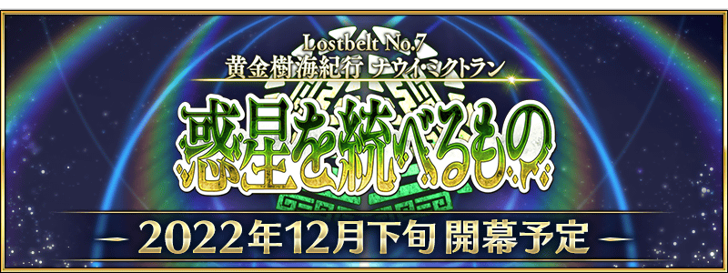

第2部 第7章「Lostbelt No.7 黃金樹海紀行 四載冥界 行星的統治者」預定12月下旬開幕！
由於開放條件為通過「非靈長生存圏 通古斯卡聖域」的後記(エピローグ)，請務必推進主線關卡期待續報！
◆開幕預定時期◆
2022年12月下旬
◆開放條件◆
通過「非靈長生存圏 通古斯卡聖域」的後記(エピローグ)後開放。
※「非靈長生存圏 通古斯卡聖域」的序幕(プロローグ)及後記(エピローグ)以外的關卡，開放主線分支的話才能遊玩。詳情請確認此處。
※不需要通過亞種特異點(從Ⅰ到Ⅳ)、主線關卡第2部 第5.5章、第2部 第6.5章。
◆注意◆
第2部 第7章「Lostbelt No.7 黃金樹海紀行 四載冥界 行星的統治者」的開放條件為通過「非靈長生存圏 通古斯卡聖域」的後記(エピローグ)，但由於本章相當於第2部 第6.5章「死想顯現界域 如夢似幻 某幻想的生與死」之後的劇情，包含有關第2部 第6.5章內容的一部份劇透。
※本頁面皆為開發中圖片。會有與實際圖片相異的情況。
在「Fate/Grand Order」官方網站內首頁及Gallery，公開了第2部 第7章「Lostbelt No.7 黃金樹海紀行 四載冥界 行星的統治者」的預告PV。
敬請確認。
◆注意◆
預告PV有接觸到第2部 第6.5章「死想顯現界域 如夢似幻 某幻想的生與死」核心劇情的一部份。未遊玩的玩家請注意。
其他還有期間限定『「Lostbelt No.7」開幕前主線關卡通過聲援宣傳活動 第1彈』的情報公開中！
關於詳情，請自下述橫幅確認。
■「Lostbelt No.7」開幕前主線關卡通過聲援宣傳活動 第1彈詳細情報